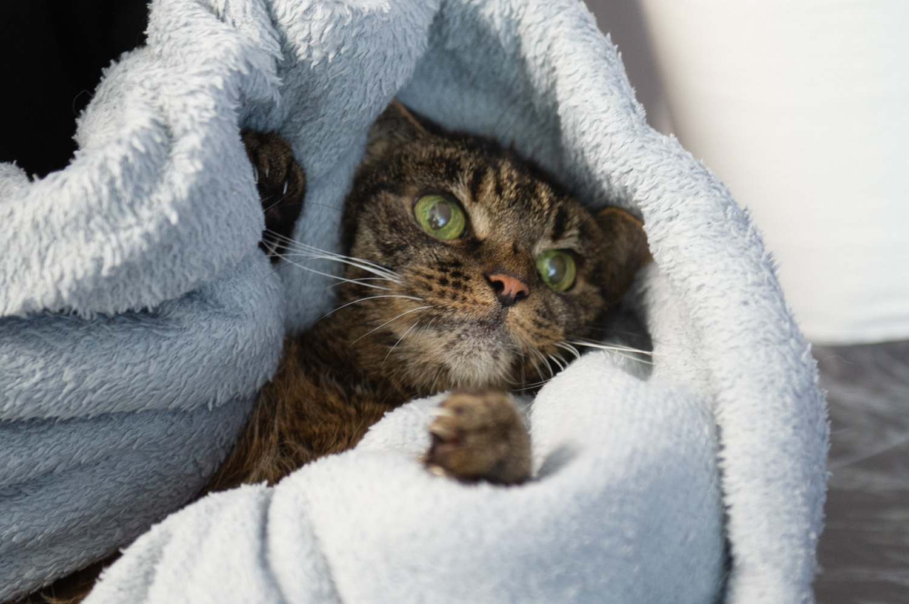
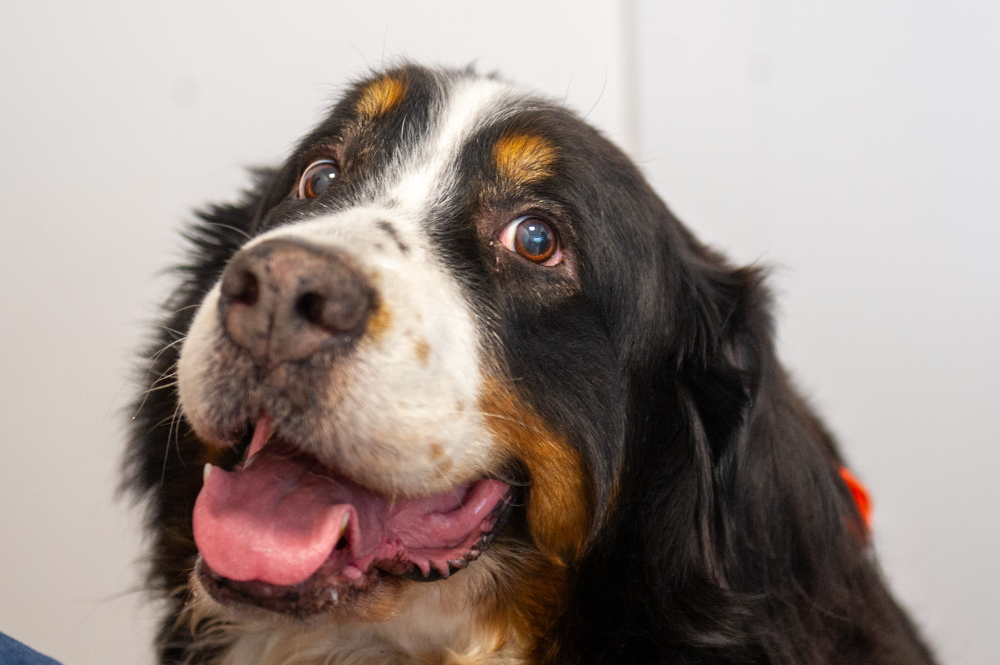
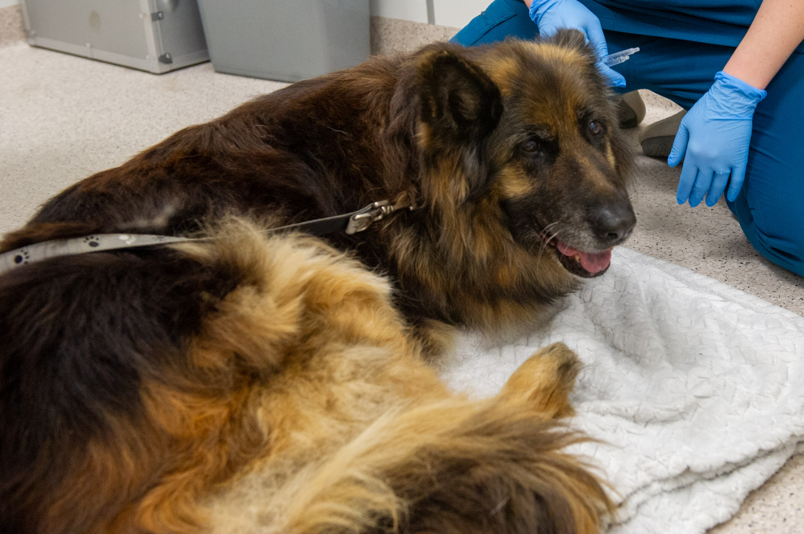

Geriatria zwierzęca · Warszawa‑Bielany
lek. wet.
Dominika
Balcerzak
Lekarz internista, geriatra — opieka nad Twoimi psami i kotami w drugiej połowie życia.
Uporządkowana diagnostyka, jeden plan leczenia, komfort Pacjenta na pierwszym miejscu.
O mnie
W ostatnich latach nie tylko my żyjemy dłużej. Nasze zwierzęta również. Rozwój medycyny weterynaryjnej jest nieprawdopodobny.
Mimo to wciąż jednak często słyszę: „Mój pies jest już za stary na leczenie” albo „Kot tak się zachowuje, bo się zestarzał”. Tymczasem przyczyną wielu zmian w zachowaniu czy kondycji Pacjenta nie jest sam wiek, lecz choroba, która przez długi czas może rozwijać się w ukryciu.
Współczesna medycyna weterynaryjna oferuje coraz skuteczniejszą diagnostykę i bezpieczniejsze metody leczenia, niezależnie od wieku zwierzęcia. Dostępne są nowe terapie oraz specjalizacje, dzięki którym możemy zadbać lepiej o nasze psy i koty. Starsi Pacjenci często trafiają jednak od jednego specjalisty do kolejnego — otrzymują wiele zaleceń, ale brakuje osoby, która spojrzy na ich stan całościowo i poprowadzi ich internistycznie przez drugą połowę życia.
Kim jestem?
Jestem lekarzem weterynarii, specjalistką chorób psów i kotów oraz absolwentką Wydziału Medycyny Weterynaryjnej SGGW w Warszawie, który ukończyłam w 2009 roku.
Od 2017 roku jestem współwłaścicielką Przychodni Weterynaryjnej Kochanowskiego na warszawskich Bielanach, a od 2025 roku również współwłaścicielką jej filii na Bródnie. W swojej dotychczasowej pracy byłam także związana z branżą farmaceutyczną oraz laboratorium diagnostycznym ALAB Weterynaria.
Przez wiele lat współpracowałam z lekarzami onkologami, dzięki czemu zdobyłam duże doświadczenie w opiece nad zwierzętami przewlekle chorymi i geriatrycznymi. W kręgu moich zainteresowań znajduje się również neurologia, endokrynologia i gastroenterologia, co pozwala mi patrzeć na Pacjenta szerzej i łączyć objawy z różnych obszarów jego zdrowia.
W pracy szczególnie ważne jest dla mnie całościowe podejście — uporządkowanie diagnostyki, łączenie zaleceń różnych specjalistów oraz opracowanie planu leczenia dopasowanego do wieku, stanu zdrowia i możliwości konkretnego zwierzęcia i Opiekuna.
Nie boję się również trudnych Pacjentów — w tym agresywnych kotów. Wiem, jak ważne są odpowiednie podejście, cierpliwość i poszanowanie granic zwierzęcia.
Priorytetem zawsze pozostaje dla mnie komfort życia Pacjenta, jego dobrostan oraz zapewnienie mu możliwie najlepszego funkcjonowania na każdym etapie choroby i starzenia się.
Moi Pacjenci
Psy i koty w drugiej połowie życia — zdrowi seniorzy wymagający czujnej kontroli oraz Pacjenci przewlekle chorzy, prowadzeni długofalowo.
Pacjent geriatryczny
Przeglądy senioralne, wczesne wykrywanie chorób rozwijających się w ukryciu, plan kontroli dopasowany do wieku.
Choroby przewlekłe
Prowadzenie Pacjentów przewlekle chorych, opieka wspierająca.
Interna: neurologia, endokrynologia, gastroenterologia
Łączenie objawów z różnych obszarów zdrowia w jedną, spójną diagnozę.
Trudni Pacjenci
W tym koty agresywne i lękliwe — spokojne tempo, cierpliwość i poszanowanie granic zwierzęcia.
Jak pracuję
- 01 / WYWIAD
Pełna historia choroby Pacjenta, dotychczasowe zalecenia i wszystkie przyjmowane leki.
- 02 / BADANIE KLINICZNE
Ocena stanu zdrowia z poszanowaniem ograniczeń wynikających z wieku.
- 03 / DIAGNOSTYKA
Uporządkowanie badań i diagnoz — tylko te, które zmieniają decyzję i diagnozę.
- 04 / PLAN
Jeden plan leczenia, dopasowany do Zwierzęcia i Opiekuna.
- 05 / PROWADZENIE
Stała kontrola i korekta terapii w kolejnych etapach.



Kiedy
przyjść
Większość chorób drugiej połowy życia zaczyna się od drobiazgu, który łatwo wziąć za samą starość. Jeśli rozpoznajesz u swojego Zwierzęcia któryś z tych sygnałów — warto go sprawdzić.
- Pije wyraźnie więcej wodyCzęściej się załatwia, czasem budzi w nocy, żeby wyjść.
- Chudnie mimo apetytuJe tyle samo co zwykle, a sylwetka i masa się zmieniają.
- Trudniej wstajeSztywno rusza po odpoczynku, wolniej wchodzi po schodach, niechętnie wskakuje do auta.
- Kot przestał skakaćNie wchodzi już na parapet albo wybiera niższe miejsca niż dawniej.
- Zmieniło się zachowanieChowa się, jest drażliwy, w nocy chodzi po mieszkaniu albo nawołuje.
- Gorzej słyszy lub widziNie reaguje na wołanie, wpada na przedmioty, gubi się w znanym miejscu.
- Nieprzyjemny zapach z pyskaJe wolniej i ostrożniej, wypuszcza kawałki jedzenia, ślini się.
- Guzek pod skórąNowy albo taki, który powiększył się przez ostatnie tygodnie.
- Szybciej się męczyKrótsze spacery, kaszel, przyspieszony oddech także w spoczynku.
- Sierść w gorszym stanieKot przestał się myć, pojawił się łupież, przerzedzenia albo wyłysienia.
Żaden z tych sygnałów nie oznacza sam w sobie choroby, a ten spis nie zastępuje badania — ma pomóc zauważyć moment, w którym warto przyjść. Jeśli objawy narastają z dnia na dzień albo Zwierzę przestało jeść i pić, nie czekaj na wizytę planową — zadzwoń do przychodni.
Wybrane kursy
i szkolenia
Wiedza, którą wykorzystuję w codziennej pracy z Pacjentami w drugiej połowie życia.
-
Studia podyplomowe „Choroby psów i kotów”SGGW, Warszawa
-
Czterosemestralna Szkoła Neurologii WeterynaryjnejAkademia Wet dr Miłosława Kwiatkowska
-
Endokrynologia weterynaryjna z dr Ewą ZwierzyńskąAkademia Wet dr Miłosława Kwiatkowska
-
Kurs podstawowy z dermatologii weterynaryjnejAkademia Dermatologii dr n. wet. Dorota Pomorska-Handwerker
-
Otologia kliniczna psów i kotówDermwet Edu
-
Seminarium hemato-onkologiczneRedline, Łazy
-
Hematologia klinicznaTherios, Myślenice
Publikacje
naukowe
Miejsce na listę publikacji i wystąpień — prześlij tytuły, a uzupełnię tabelę.
Kontakt
i umów się
Konsultacje geriatryczne i internistyczne dla psów i kotów — wizyty po wcześniejszej rejestracji.
Przychodnia Weterynaryjna Kochanowskiego
ul. Kochanowskiego 23, lok. H601-864 Warszawa
tel. 22 150 35 00, +48 604 711 716
Przed pierwszą wizytą przygotuj dotychczasową dokumentację Pacjenta i listę podawanych leków.
sob. 10:00–14:00
niedziele i święta nieczynne